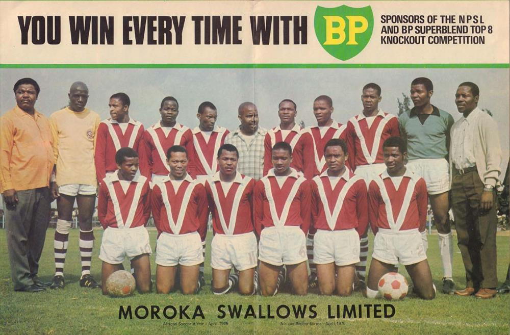
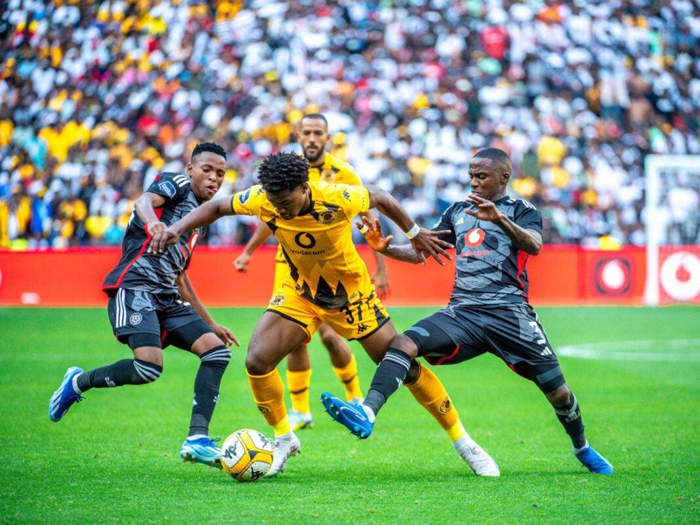
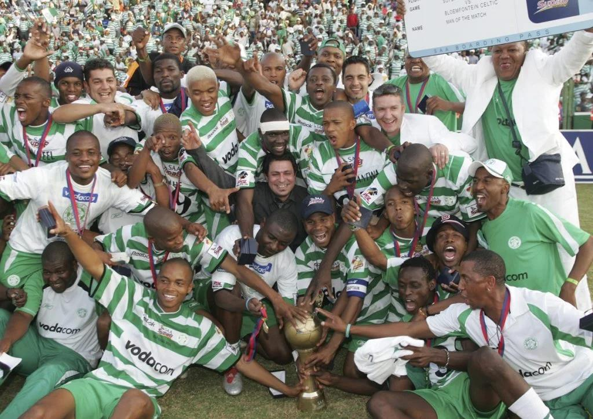
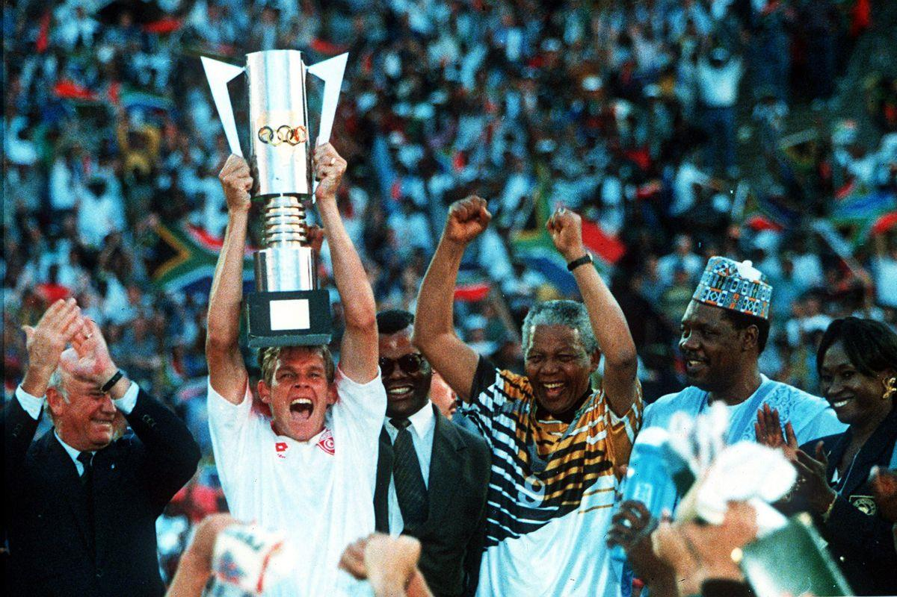
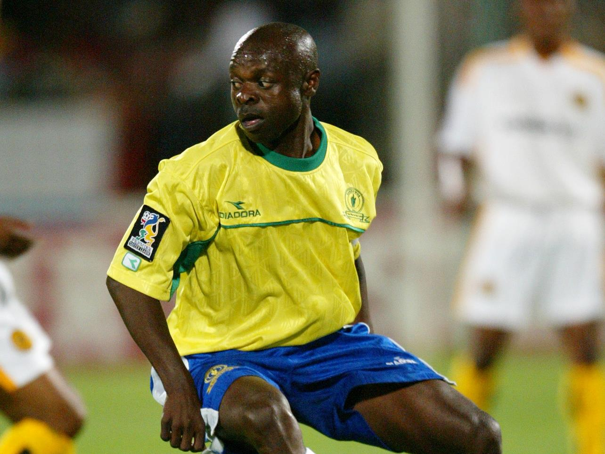
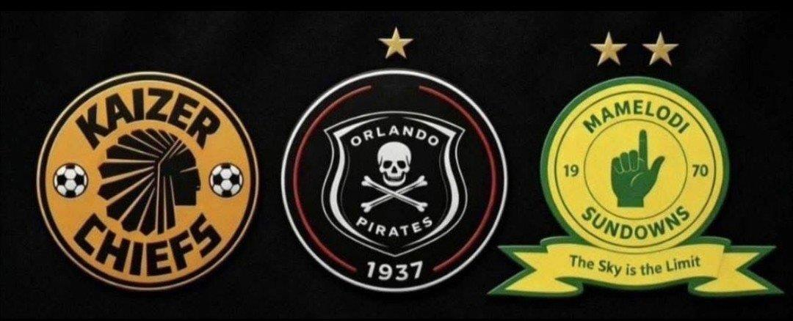
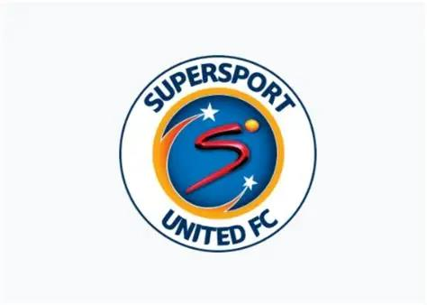
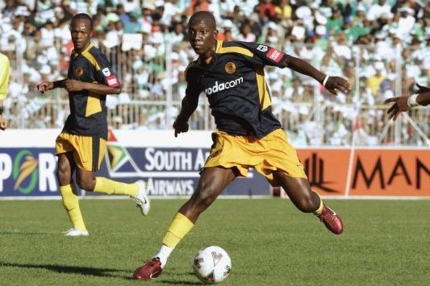
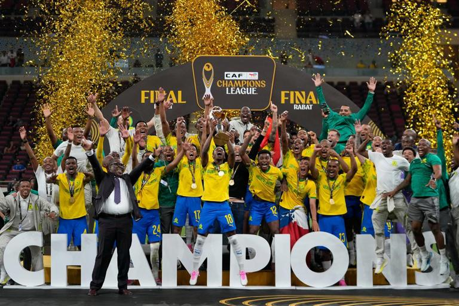

The league table tells you who won. It cannot tell you what the win meant. It cannot capture the vuvuzela cutting through the afternoon heat, the taxi-rank debate that begins before sunrise, or the family that has worn the same colours across three generations.
For some, football is entertainment. For others, it is family, identity, belonging and, occasionally, heartbreak. Few institutions capture that relationship quite like South Africa’s Premier Soccer League.
Today, the PSL is associated with television deals, corporate sponsorship, packed stadiums, expensive signings and fierce competition. Its premier division, the Betway Premiership, is the most visible stage. But the culture that sustains it was here long before the modern league arrived.
The PSL did not invent South African football passion. It inherited a country already in love with the game.
01 Before the PSL: football in a divided country
South African football’s story stretches back well beyond 1996. Matches were being documented in the 19th century, while African, Indian and Coloured communities built their own clubs, organisations and competitions. Football was sport, yes — but it was also community, pride, local identity and a place to shine in a society designed to restrict opportunity.
Apartheid fractured the football landscape along racial lines. The National Football League, established in 1959, was reserved for white players and clubs. Black football developed through separate structures, including the National Professional Soccer League, established in 1971. These were not merely different administrators and fixtures. They reflected a wider system that restricted facilities, resources and opportunity according to race.
Still, the game kept growing. Orlando Pirates and Moroka Swallows became deeply rooted in their communities. Kaizer Chiefs, founded in 1970 by Kaizer Motaung after his return from professional football in the United States, grew into a giant. Mamelodi Sundowns, whose origins date to the early 1960s, built a history of their own. These clubs were not waiting for a modern league to give them meaning. Their stories were already being written in the stands and streets.

02 The townships, the giants and the making of culture
To understand the PSL, understand the supporters. Long before football became a polished television product, it belonged to neighbourhoods, working-class communities, families and the people who made the journey to the stadium week after week.
Orlando Pirates, founded in Orlando East in 1937, and Kaizer Chiefs became two of the most recognisable symbols of that culture. Their supporters did not choose teams only because of results. They inherited stories, personalities, family loyalties and identities. The Soweto Derby became more than a fixture: it became an occasion for predictions, fashion, music, social gatherings and bragging rights that could shape an entire weekend.
But the country’s football identity was never limited to Soweto. Durban, Cape Town, Pretoria and Bloemfontein each brought their own character. Jomo Cosmos, Moroka Swallows and Bloemfontein Celtic became part of the national conversation. Club colours turned into symbols of belonging, worn at stadiums, in streets and in homes.


03 1991–1996: unity, change and the birth of the PSL
The early 1990s transformed South African football alongside the wider political transformation of the country. In December 1991, historically divided football bodies came together to form a non-racial South African Football Association. In July 1992, South Africa was readmitted to FIFA, returning to international football after years of isolation.
Then came democracy in 1994, followed by a defining sporting moment in 1996: South Africa hosted and won the Africa Cup of Nations. Bafana Bafana defeated Tunisia 2–0 in the final at FNB Stadium, then known as Soccer City. Football became part of a wider national story of rebuilding identity and bringing people together.
Yet domestic football still faced structural challenges, including governance, financial stability and administration. The PSL, operating as the trading name of the National Soccer League, was formally established in 1996. Its purpose was not to begin South African football, but to build a stronger professional structure around it.

A timeline of turning points
04 Manning Rangers: the first crown
Every great sporting institution has an origin story. The PSL’s first championship belongs to Manning Rangers. Based in Durban, the club entered the inaugural 1996–97 season without the expectations attached to the biggest names — and then finished on top.
Under coach Gordon Igesund, Rangers won the title eight points ahead of Kaizer Chiefs, with Orlando Pirates third. Wilfred Mugeyi of Umtata Bush Bucks finished as the league’s leading scorer with 22 goals. The opening season made one thing clear: reputation mattered, but consistency had the final say.
Rangers did more than lift a trophy. They gave the new competition its first defining story — and remind us that league history belongs to clubs that built the stage, even when they later slipped from the spotlight.
05 Dynasties, challengers and the big three
Mamelodi Sundowns won their first PSL-era league title in 1997–98, retained it in 1998–99 and completed a three-title run in 1999–2000. Orlando Pirates then won in 2000–01, Santos took the crown in 2001–02, and Pirates returned in 2002–03. Those early seasons gave the league variety and proof that different footballing approaches could win.
Later, SuperSport United produced a dynasty of its own, winning three consecutive titles from 2007–08 through 2009–10. Their run demonstrated that sustained success did not have to belong only to the traditional giants. Organisation, recruitment, coaching and squad consistency could move a club into the history books.
Meanwhile, the argument about South Africa’s biggest club continued. Chiefs and Pirates carry generations of tradition, national support and derby history. Sundowns increasingly became the benchmark for converting investment and ambition into sustained league success. The three clubs do not represent the same kind of greatness — and that is exactly why the debate never ends.


06 When broadcasting changed the game
Professional football runs on more than goals. Players must be paid, stadiums maintained, teams transported, medical and training facilities supported, and competitions administered. Sponsors and media partners became increasingly important to that ecosystem.
A major turning point came in 2007, when the league awarded a landmark broadcasting-rights deal to SuperSport, widely reported at the time at approximately R1.6 billion. Television brought the league into homes and viewing venues across the country. Highlights, analysis, interviews and football discussion helped build a wider media culture around match day.
Commercial growth created opportunity, but it also raised a difficult question: how does football grow as a valuable media property without leaving behind the supporters who built it? The debate about pay-TV access showed that the league’s business model and its cultural responsibility cannot be separated.

07 The stars, the academies and the next generation
A league’s history is ultimately written by people. Trophies establish the record; players, coaches and club figures give it personality. Some footballers arrive with established reputations. Others become household names through a defining performance, a career spent in one club’s colours, or a move from local football to the international stage.
The development of local talent is just as important as big-name signings. The DStv Diski Challenge created a structured reserve-team platform for young players, helping clubs assess prospects and offer a more organised route towards senior football. Players such as Percy Tau and Lyle Foster illustrate how local talent can progress into international careers.
The challenge is bigger than producing a handful of exports. Clubs need coaching, facilities, scouting, sports science and meaningful first-team opportunities. Young players need the chance to grow through competition, not remain indefinitely on the edge of a senior squad. The future will depend not only on who spends the most, but on who identifies, develops and trusts the next generation.

08 Sundowns and the age of dominance
In the 2010s, Sundowns moved from recurring champions to the defining force of the modern PSL era. Their 2015–16 CAF Champions League victory, under Pitso Mosimane, showed that domestic strength could translate into continental achievement.
According to the supplied document, Sundowns won eight consecutive league titles from 2017–18 through 2024–25. That run reflected more than a strong starting eleven: squad depth, recruitment, coaching continuity, infrastructure and sustained decision-making all played a part.
Dominance creates its own tension. For Sundowns supporters, it is pride. For rivals, it is a benchmark. For neutral viewers, it prompts the question: how does the rest of the league close the gap? Money matters, but so do recruitment, youth development, management and the ability to make good decisions consistently.

09 From Castle to ABSA, DStv and Betway
The names attached to a league can change while its underlying history remains. Over the years, the premier division has carried commercial identities including the Castle Premiership, ABSA Premiership and DStv Premiership. In July 2024, the PSL announced Betway as the new title sponsor, with the Betway Premiership branding taking effect for the 2024–25 season.
The wider PSL ecosystem reaches beyond the top flight. The Motsepe Foundation Championship, Nedbank Cup, MTN8 and Carling Knockout each add their own stakes and storylines. Cup competitions make room for upsets; promotion and relegation give clubs something tangible to chase; the second tier offers a route back for fallen giants and a route up for ambitious newcomers.
The Betway Premiership may be the brightest stage, but the full story of the PSL is much larger than the clubs currently competing in the top division.
10 2026: Pirates interrupt the script
The supplied document records a dramatic turn on 23 May 2026: Orlando Pirates defeated Orbit College 2–0 to secure the Betway Premiership title, finishing one point ahead of Mamelodi Sundowns. It describes the championship as Pirates’ fifth PSL-era crown and the end of a 14-year wait for the league title.
For Pirates supporters, the result meant the end of a long wait. For the league, it was a reminder that even an era defined by sustained dominance can be interrupted when a rival gets the decisive details right. One point separated champion from challenger. Months of work were reduced to a simple verdict in the final table.
That is the emotional force of league football: dynasties are built, records are set, and supporters start to believe the order will never change. Then football changes the story.
11 Football is culture, not just a product
The PSL exists inside a wider South African culture shaped by music, fashion, language, township life and urban identity. Club colours are self-expression. Jerseys become streetwear. Match-day rituals create social bonds. A derby can pull an entire neighbourhood into one conversation; a last-minute goal can turn a quiet viewing venue into a celebration.
Football also creates space for photographers, journalists, designers, musicians, local businesses and content creators. A photograph can capture more than a player striking a ball: the emotion in a supporter’s face, the movement of a crowd, the tension on a coach’s touchline. Statistics tell us who won. Images and personal stories help us understand what the victory meant.
For Sub Culture, that distinction matters. The PSL is not simply a product consumed by an audience. It is a living part of the country’s social fabric, sustained by people who travel across provinces, pass down club loyalties and keep their teams alive through difficult periods.
12 The challenges that remain
The PSL’s growth is real, but commercial success is not the only measure of a healthy football culture. Access and affordability remain important: supporters should be able to follow the game even when they cannot attend every match or pay for every broadcasting option.
Stadium facilities, transport, safety, ticketing and match-day organisation shape whether fans want to return. Youth development needs real pathways from grassroots football into professional competition. Competitive balance depends on sound management across clubs, not just the ambition of one champion. Financial sustainability requires more than expensive signings, and continental performance remains a test of the league’s strength.
These challenges do not erase what the PSL has achieved. They show why its development is an ongoing project, not a finished story.
The final whistle
The PSL was formally established in 1996, but its significance reaches much further back. Its foundations lie in a football culture shaped by exclusion, community organisation, resilience and generations who refused to let the game be confined by the society around them.
Manning Rangers gave the new competition its first surprise. SuperSport United showed that a challenger could build a dynasty. Sundowns demonstrated the power of sustained institutional strength. Pirates’ 2026 title, as recorded in the supplied source, reminded everyone that the story can still turn.
A league can change its name. A club can change its coach. A champion can lose its crown. But the relationship between South African football and the people who love it cannot be reduced to a sponsorship deal or a league table.
That relationship is the PSL’s most enduring inheritance.
Sources & further reading
This article is adapted from the supplied 26-page PDF. The links below preserve the source references included in that document; image files extracted from the PDF are bundled locally in the assets folder.
- Football History in Africa — Tales of Africa
- South African History Online — Football timeline
- Sports Memories
- Scrolla.Africa — Soweto Derby tickets
- Hollywoodbets blog — Bloemfontein Celtic image source
- News Round the Clock — South Africa image source
- PSL — About the League
- 1996–97 South African Premiership
- Broadcasting rights — South African Government
- ICASA — Inquiry into subscription television broadcasting
- 24.com — youth development image source
- MSN — Sundowns image source
- PSL — DStv Premiership launch
- PSL — Betway Premiership announcement
- PSL — Pirates crowned champions, 23 May 2026
Editorial note: historical claims and the 2026 championship account follow the supplied PDF. Verify dates, statistics and current competition details against official PSL records before republishing if any source has since been updated.